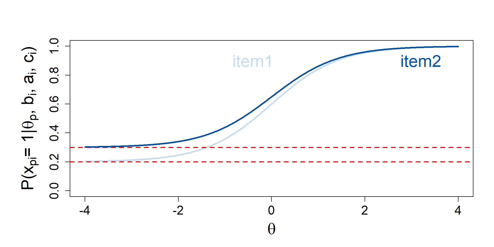

Test length doesn’t matter (too much): Item response theory procedures for shortening tests
To each its own

IRT models and Rasch model \(\rightarrow\) Models for latent trait
Moving the asymptotes
\[P(x_{pi} = 1| \theta_p, b_i, a_i) = c_i + (1 - c_i) \dfrac{\exp[a_i(\theta_p - b_i)]}{1+\exp[a_i(\theta_p - b_i)]}\]

\[P(x_{pi} = 1| \theta_p, b_i. a_i) = c_i + (d_i - c_i) \dfrac{\exp[a_i(\theta_p - b_i)]}{1+\exp[a_i(\theta_p - b_i)]}\]

Bruto

\(\forall Q \in\mathcal{Q} = 2^B \setminus \{\emptyset, B\}\),
- \(TIF^{Q} = \frac{\sum_{i \in Q} IIF_i}{||Q||}\)
- \(\overline{\Delta}_{TIF^{Q}} = \mathit{mean}(|TIF^* - TIF^{Q}|)\)
\(Q_{bruto} = \arg \min_{Q \in \mathcal{Q}} \overline{\Delta}_{TIF^{Q}}\)
ILA & ISA

\(B\): Item bank
\(Q^k \subset B\): Set of items selected for inclusion in the STF up to iteration \(k\)
\(\mathbf{TIF}^*\): TIF target
\(i^*\): Item selected at each iteration
ILA
At \(k = 0\): \(TIF^0(\theta) = 0 \, \forall \theta\), \(Q^0 = \emptyset\). For \(k \geq 0\),
- \(\theta_{target} := \arg \max |TIF^* - TIF^{k}|\)
- \(i^* := \arg \min_{i \in B\setminus Q^{k}} |\theta_{target} - b_i|\)
\(pTIF_{i^*} = \frac{TIF^k + IIF_{i^*}}{||Q^{k}|| + 1}\)
Termination Criterion: \(|TIF^* - pTIF_{i^*}| \geq |TIF^* - TIF^{k}|\):
- FALSE: \(Q^{k+1} = Q^{k} \cup \{i^*\}\), \(TIF^{k+1} = pTIF_{i^*}\), iterates 1-4
- TRUE: Stop, \(Q_{ILA} = Q^k\)
ISA
At \(k = 0\): \(TIF^0(\theta) = 0 \, \forall \theta\), \(Q^0 = \emptyset\). For \(k \geq 0\),
- \(\theta_{target} := \arg \max |TIF^* - TIF^{k}|\)
- \(i^* := \arg \max_{i \in B\setminus Q^k} IIF_i(\theta_{target})\)
\(pTIF_{i^*} = \frac{TIF^k + IIF_{i^*}}{||Q^{k}|| + 1}\)
Termination Criterion: \(|TIF^* - pTIF_{i^*}| \geq |TIF^* - TIF^{k}|\):
- FALSE: \(Q^{k+1} = Q^{k} \cup \{i^*\}\), \(TIF^{k+1} = pTIF_{i^*}\), iterates 1-4
- TRUE: Stop, \(Q_{ISA} = Q^k\)
Frank

At \(k = 0\): \(TIF^0(\theta) = 0 \, \forall \theta\), \(Q^0 = \emptyset\). For \(k \geq 0\),
\(A^k = B \setminus Q^k\)
\(\forall i \in A^k\), \(pTIF_{i}^k = \frac{TIF^k + IIF_{i}}{||Q^k||+1}\)
\(i^* = \arg \min_{i \in A^k} |TIF^* - pTIF_i^k|\)
Termination criterion: \(|TIF^* - pTIF_{i^*}| \geq |TIF^* - TIF^{k}|\):
FALSE, \(k = k + 1,\) \(Q^{k+1} = Q^k \cup \{D\}\), iterates 1-4
TRUE, stops, \(Q_{Frank} = Q^k\)
Results

ILA & ISA failed to find a STF in the 7% and 18% of the replications
In the end
Mathematically, we are at loss
Psychologically? I don’t know
Do they work? Hopefully
Acknowfndabfjknc
Pasquale Anselmi, Egidio Robusto, Livio Finos, Gianmarco Altoè